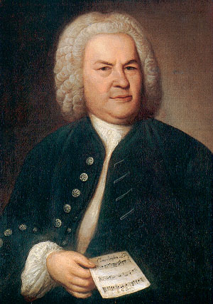
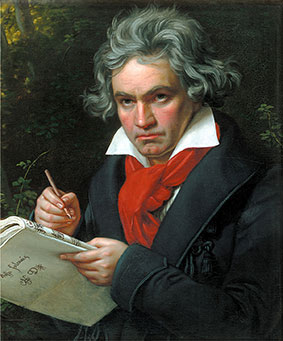
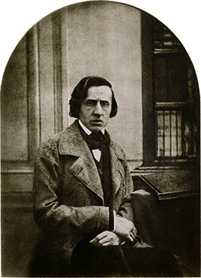

Über die Frage der größten Komponisten lässt sich lange streiten und keine Antwort ist wirklich richtig. Die folgende Liste ist deswegen eine Mischung aus den anerkannt größten Komponisten aller Zeiten und der subjektiven Ansicht des Autors.
Um die Liste nicht ausufern zu lassen, werden drei Komponisten aus unterschiedlichen Ären ausewählt: Barock, Wiener Klassik und Romantik:
* leider war die Gesellschaft damals anders und auch wenn es heute ausgezeichnete Komponistinnen gibt, war dies in früheren Zeiten leider nicht so.
|  | Geboren/Gestorben: | 31. März 1685 - 28. Juli 1750 | ||
| Ära: | Barock | |||
| Wichtigste Werke: | Das wohltemperierte Clavier, Matthäus-Passion, Weihnachtsoratorium | |||
| Wikipedia: | de.wikipedia.org/wiki/Johann_Sebastian_Bach | |||
| Bedeutung: | Seine Werke sind von zentraler Bedeutung. Die gesamte moderne Musik basiert auf seinen Werken. Selbst MusikerInnen welche seine Werke klanglich nicht mögen (so wie der Autor), erkennen seine Genialität und die mathematische Schönheit seiner Werke an. |
|  | Geboren/Gestorben: | 17. Dezember 1770 - 26. März 1827 | ||
| Ära: | Wiener Klassik | |||
| Wichtigste Werke: | 9 Sinfonien, insbesondere "Sinfonia eroica" (Nr. 3), Schicksalssymphonie (Nr. 5) und die 9. Symphonie ("Freude schöner Götterfunken"). Aber auch Klavierwerke wie die "Mondscheinsonate" und "Für Elise". | |||
| Wikipedia: | de.wikipedia.org/wiki/Ludwig_van_Beethoven | |||
| Bedeutung: | Wenn man an Wiener Klassik denkt, denkt man normalerweise zuerst an Mozart. Unter MusikerInnen wird aber äußert häufig Beethoven mehr vererht als Mozart. Das liegt an dem Schmerz, den Gefühlen und der Kraft die in seinen Werken sind. Mit seinen Werken beeinflusste Beethoven insbesondere die nächste Generation: Die Romantiker. |
|  | Geboren/Gestorben: | 1810 - 1849 | ||
| Ära: | Romantik | |||
| Wichtigste Werke: | Fast alle seine Nocturne, Preludes und Etuden besonders "Fantasie-Impromtu", Nocturne Op.9 Nr. 2 und "Regenbogenprelude". | |||
| Wikipedia: | de.wikipedia.org/wiki/Frédéric_Chopin | |||
| Bedeutung: | Chopin hat in vielen Bereichen die Musik weiterentwickelt. Einerseits hat er bedeutende Aspekte zur Klavierpädagogik beigetragen die noch heute so angewendet werden und selbst viele Schüler ausgebildet. Gleichzeitig ist seine Musik, durch Dissonanzen und deren Auflösung, geprägt, während man diese jedoch nicht mitbekommt. Diese meisterhafte Komponierleistung wurde von vielen weiteren Komponisten der Romantik (und darüber hinaus) ebenso übernommen. |